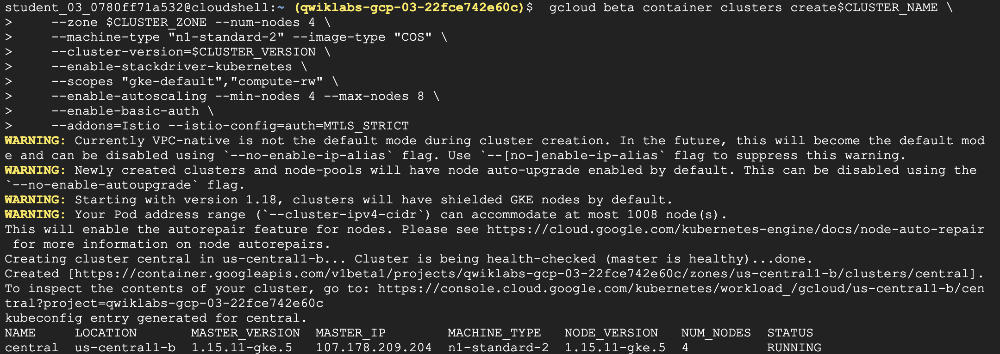
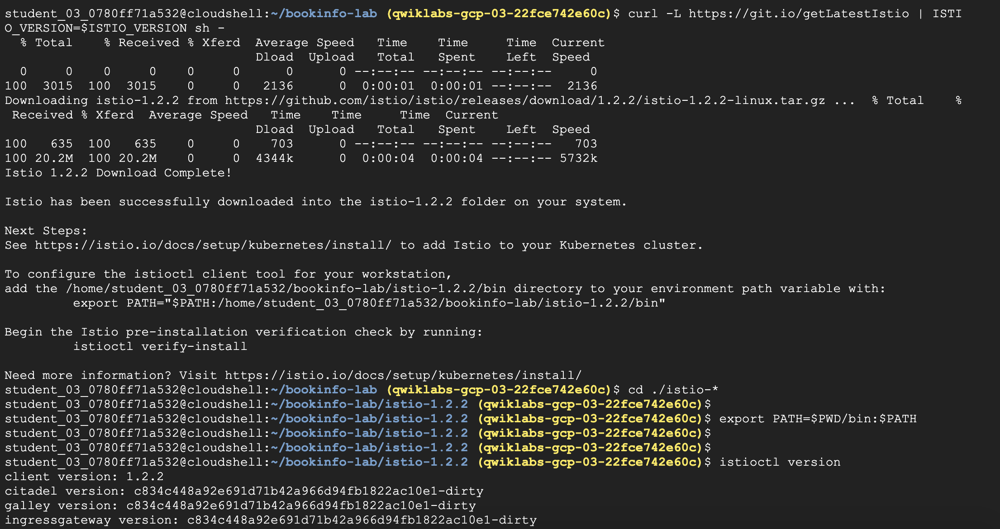
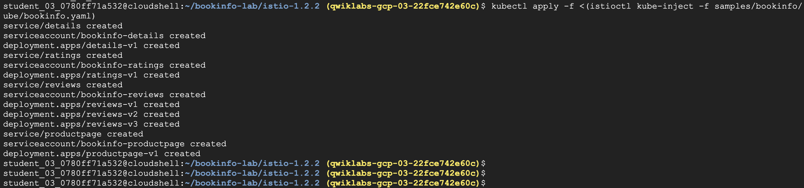
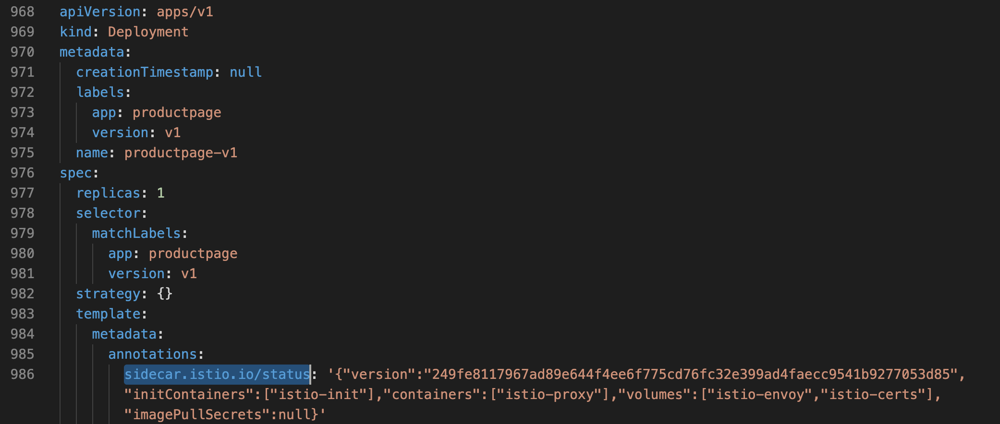
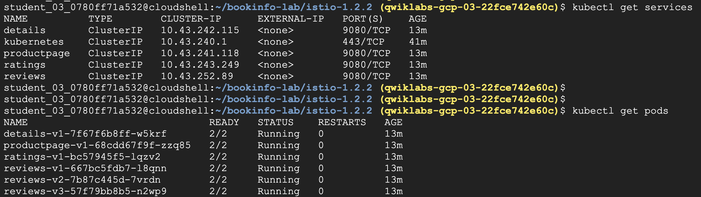
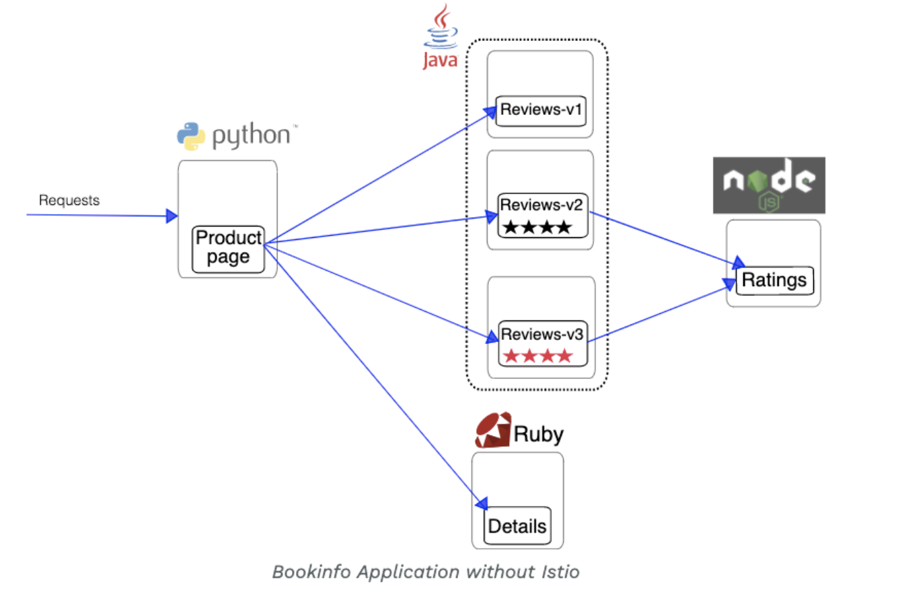
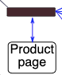
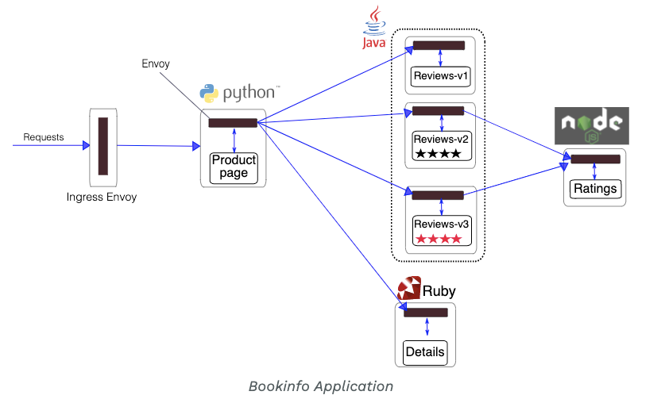
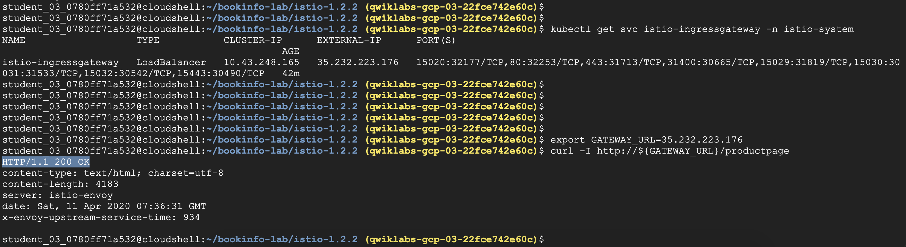
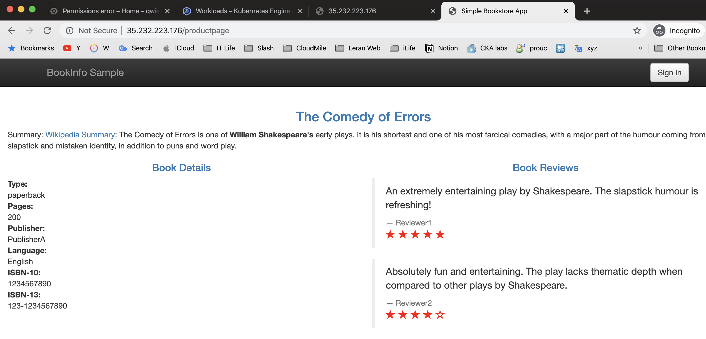

[Kative] 手把手 Google Kubernetes Service(GKE) | 什麼是Service Mesh, Istio
Status: Completed
▌前言
什麼是service mesh？
使用Container的網路服務，背後都會有多個程式做支持，且機會出現大量的存取行為
- 多版號的Application：拜DevOps精神所賜更版上版的頻率，越來越順暢，因此要在不同的服務組合做A/B測試
- 負載平衡構成的連線關系：Cloud Native概念下許多的網路服務都會支持自動擴展的能力
- 身份驗證：跨服務鏈設置端到端身份驗證
上面幾種行為統稱為service mesh，也就是一個”鏈”
那麼… 誰該來管理這些鏈 Service Mesh？
▌安裝 / 部署
Step1. 準備 GKE Cluster
- 先指定cluster worker node vm的zone位置
- 透過
gcloud container clusters建立4個node GKE - GKE啟用istio非常的容易，加上
--addons即可
# 設定vm的zone位置
gcloud config set compute/zone us-central1-f
# 建立GKE cluster
# 直接enable addons Istio
gcloud container clusters create hello-istio \
--num-nodes 4 \
--enable-basic-auth \
--addons=Istio --istio-config=auth=MTLS_STRICT部署一個GKE環境

Step2. 安裝 Istio, Istio Tools
首先取得Istio client，這邊有指定版號1.2.2
安Istio’s 核心元件 ，同時也啟用
mutual TLS(mTLS) 驗證給sidecars使用Istio control plane 核心元件有以下
Pilot: Handles configuration and programming of the proxy sidecars.
Mixer: Handles policy decisions for your traffic and gathers telemetry.
Ingress: Handles incoming requests from outside your cluster.
CA: the Certificate Authority.
#1 取得Istio client
curl -L https://git.io/getLatestIstio | ISTIO_VERSION=1.2.2 sh -
#2 Add the istioctl client to your PATH:
export PATH=$PWD/bin:$PATH
#3 安裝Istio components:*Pilot, Mixer, Ingress, CA etc.*
kubectl apply -f install/kubernetes/istio-auth.yaml
#4 確認Istio 版本, 執行istio pod
kubectl get svc -n istio-system
kubectl get pods -n istio-system取得application sample code, 並測試 istio

▌驗證 / 測試
Step1. 部署一個Application
Istio作法是建立proxy sidecar 在每個pod的旁邊，istioctl kube-inject這個動作是透過原有bookinfo.yaml，將原有containers (procdocpage, rankings, detailed etc.)再加上Istio proxy的設定檔
bookinfo.yaml除了 service 也有 deployment- 這個是手動 inject
sidecar，第一行只會顯示在 stdout，而第二行是合成一個指令 - 因為沒有在 namespace 下 label 設定 auto-inject，所以是手動inject
- 然後要自己先產生包含 sidecar container 的
YAML，再去跑kube apply
#1 先確認bookinfo.yaml在不在
ls samples/bookinfo/kube/bookinfo.yaml
#2 kube-inject 只會顯示在 stdout
istioctl kube-inject -f samples/bookinfo/kube/bookinfo.yaml
#3 合成一個指令，就是將括弧內的輸出當作是檔案，給前面的指令執行
# 指令說明
1. <( ) 是個 linux 指令的用法
是將括弧內的輸出當作是檔案，給前面的指令執行
2. 原本 -f 後面是接檔案路徑
kubectl apply -f <(istioctl kube-inject -f samples/bookinfo/platform/kube/bookinfo.yaml)部署istio, 和主要bookinfo application

- 檢視已加入istio config
發現annotations足跡，有設定過sidecar.istio.io並給於版號 - annotations 類似於labels，但它是沒有識別用途的標籤
# 找找 Istio sidecar, along with all the configuration
# 在這個輸出檔 istioctl kube-inject -f samples/bookinfo/kube/bookinfo.yaml
metadata:
annotations:
sidecar.istio.io/status: '{"version":"249fe8117967ad89e644f4ee6f775cd76fc32e399ad4faecc9541b9277053d85","initContainers":["istio-init"],"containers":["istio-proxy"],"volumes":["istio-envoy","istio-certs"],"imagePullSecrets":null}'完整istioctl kube-inject -f 內容

Step2. 確認Bookinfo 狀態
確認剛剛的kube apply 有把pods, services 都長出來
# 確認 bookinfo pods, services
kubectl get services
kubectl get services比對一下productpage, ratings, reviews x3都有正常運作

Step3. 簡介bookinfo Application
部署完的bookinfo.yaml，簡介microservices有以下
microservices 有四個有python, Java, Ruby, node.js：
- productpage: calls the details and reviews microservices to populate the page.
- details: contains book information.
- reviews: contains book reviews. It also calls the ratings microservice.
- ratings: contains book ranking information that accompanies a book review.
reviews microservice 有三種版本：
Reviews v1 doesn’t call the ratings service.
Reviews v2 calls the ratings service, and displays each rating as 1 - 5 black stars.
Reviews v3 calls the ratings service, and displays each rating as 1 - 5 red stars.
部署完的bookinfo

加上Istio (Sidecar injected)
加上proxy sidecar 就像圖示中，在每個pod的旁邊多一顆黑色的框
先前已手動加入
kube-inject -f，代表已Istio已啟用了
因此完整的圖示如下
Step4. 透過 Istio Ingress Gateway 啟用外部存取
- 目前的
bookinfo，只有cluster ip 僅限internal 溝通，若要讓外部可以存取時，需打通對外網路 - Istio Gateway 目的，是讓你允許外部的browser可以存取bookinfo的內容
- 使用到的
apiVersion:[networking.istio.io/v1alpha3](http://networking.istio.io/v1alpha3)，可以判斷http，裡面的uri內容 apiVersion，同時也可以有route功能 ，因此提供destination、port即可達到docker和docker之間的細微流量管制
bookinfo-gateway.yaml
# 確認 bookinfo-gateway.yaml 內容
ls samples/bookinfo/networking/bookinfo-gateway.yaml
# 啟用istio-gateway，使productpage docker可以允許對外存取
kubectl apply -f samples/bookinfo/networking/bookinfo-gateway.yamlbookinfo-gateway.yaml config如下
apiVersion: networking.istio.io/v1alpha3
kind: VirtualService
metadata:
name: bookinfo
spec:
hosts:
- "*"
gateways:
- bookinfo-gateway
http:
- match:
- uri:
exact: /productpage
- uri:
prefix: /static
- uri:
exact: /login
- uri:
exact: /logout
- uri:
prefix: /api/v1/products
route:
- destination:
host: productpage
port:
number: 9080什麼是Envoy
上述的istio-gateway使用到的功能，其實是源自Envoy
- 什麼是
Envoy proxy，是高效的效能代理程式，功能是調解service mesh內所有的inbound、outbound 的流量 Istio利用Envoy多項內置功能，包括- dynamic service discovery / load balancing / TLS termination
- HTTP/2 & gRPC proxying / circuit breakers / health checks
- staged rollouts with %-based traffic split / fault injection / rich metrics.
Step5. 連線bookinfo網頁
- kubectl get svc 取得ingressgateway IP
# 取得ingressgateway expose serivce IP
kubectl get svc istio-ingressgateway -n istio-system
# 設定一下個外部IP
GATEWAY_URL=35.232.223.176
# curl 測試網頁
curl -I http://${GATEWAY_URL}/productpage查看到istio-gateway service、curl 測驗結果

browse 測試結果，也ok

▌後記
誰該來管理這些鏈 Service Mesh？
Service mesh精神就是提倡，管理不應該留給服務本身，過去你可能會在yaml中使用network policy，使用到policyTypes: Ingress 加labels達成流量控管。但是服務和服務之間沒有一個docker能夠勝任這種自上而下的工作，而且這也不應該是他們的工作。
最好的做法是服務和它們所訪問的網絡之間有一個獨立的系統，也就是切割出網路管理責任，把它全都都交給Istio。更重要的是，採用istio之後可以有以下好處
- 使服務本身不必處理網絡流量load balance, routing, re-try等的細節
- 為管理員提供一個抽象層：可以輕鬆地在cluster策略控制，監控和日誌，服務發現
- 提升docker安全性：通過
TLS進行安全的服務間(docker-to-docker)通信等方面制定有關網絡流量的進階policy
Reference:
[1] https://www.qwiklabs.com/focuses/8460?parent=catalog
[2] https://istio.io/docs/examples/bookinfo/